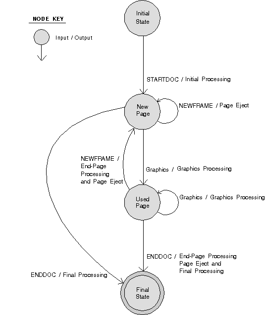

The end of a print document is signalled by the application's calling DevEscape with the DEVESC_ENDDOC parameter. The spooler returns a job identifier that can be used for job manipulation.
The following figure shows the processing carried out by a printer driver as it receives device escapes and graphics from the GPI.
Flow for Device Escapes
Note: Each device-escape pair of DEVESC_STARTDOC and DEVESC_ENDDOC creates one print job in a spooler queue. If the application needs to create multiple print jobs, use the following sequence:
DevOpenDC GpiCreatePS DevEsape(DEVESC_STARTDOC) . . . DevEsape(DEVESC_ENDDOC) DevEsape(DEVESC_STARTDOC) . . . DevEsape(DEVESC_ENDDOC) DevCloseDC